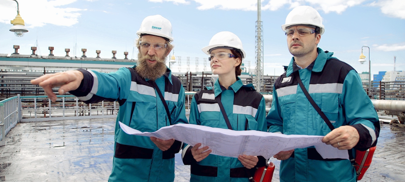

Дирекция "технология"
Реализация проектов, повышающих операционную эффективность производственных предприятий.

СИБУР-это

22
предприятия, постоянно совершенствующиеся и повышающие операционную эффективность технологических процессов

48
технических специалистов
подразделения
работают
над повышением
эффективности предприятий СИБУРа:
– поиск проектов
и генерация идей;
– моделирование технологических процессов/создание цифровых двойников производств предприятий;
– разработка технических решений, направленных на повышение эффективности;
– внедрение проектов.
– моделирование технологических процессов/создание цифровых двойников производств предприятий;
– разработка технических решений, направленных на повышение эффективности;
– внедрение проектов.
За счёт внедрений было сэкономлено
около 46 тысяч
гигакалорий,
за счёт чего можно отопить
15 многоквартирных домов в год
3,9 тысяч тонн отходов,
20 тысяч тонн
сырья и материалов,
произведено свыше
45 тонн
дополнительной целевой продукции.
Руководитель дирекции: